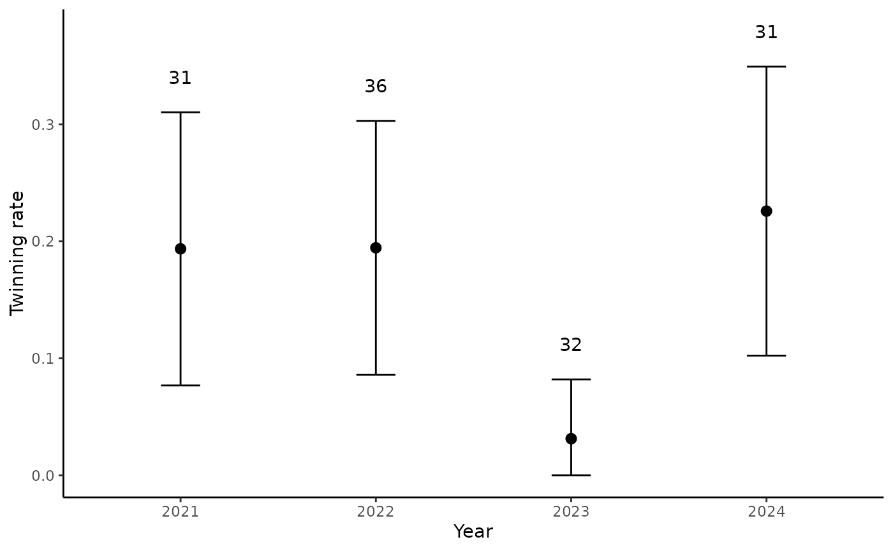
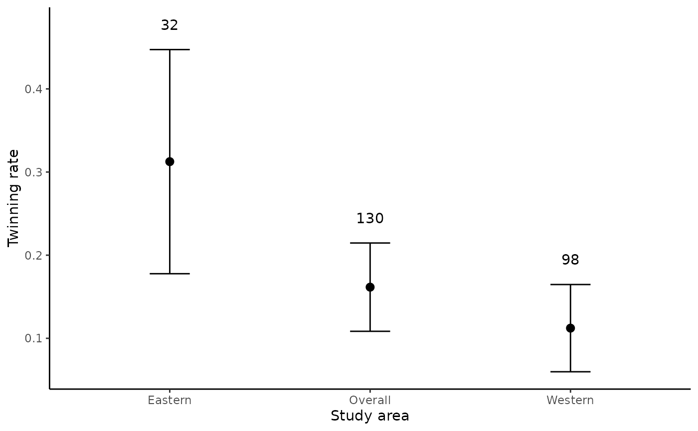

Introduction to moosetwinning
moosetwinning.Rmdmoosetwinning is an R package for producing moose
twinning rate estimates, summary plots and tables, and a MS Word report
that follows the USFWS Refuge graphic standard. The package was
originally developed for moose twinning surveys at Tetlin
National Wildlife Refuge, but the functions are flexible and could
be adapted for moose twinning surveys elsewhere.
What’s required?
To use moosetwinning and generate reports, you’ll
need:
R version >4.0 Available through FWS Apps-to-Go
Rtools version >4.0 Available through FWS Apps-to-Go
To install moosetwinning:
if (!require("pak")) install.packages("pak")
pak::pak("USFWS/moosetwinning")
library(moosetwinning)Help!
To find a help file for any function in moosetwinning,
type ? and the name of the function. For example, to get
help on how to use the import_format() function, type
?import_format. To learn about each function in the
moosetwinning package, visit the Reference
page and select a function (e.g., import_format)
How do I use it?
There are two general approaches to using moosetwinning
and selecting which approach to take depends on your needs. The first
approach (“step-wise”), consists of using individual functions
to work through the steps of importing and formatting input data,
performing an analysis, and creating tables and plots. This approach
would be favored if you’re interested in examining the details of the
analysis, would like to perform additional analyses not included in the
package, or if you just want tables and figures. The second approach
(“all in one”) performs all the above steps and compiles the
results into a MS Word document with run_report() function.
This approach would be favored for annual reporting of results. Below
are more details on the two approaches.
Option 1: Creating figures and tables
Step 1: Import and format data using
import_format()
The first step to using any functions in moosetwinning
is to import and format data. This is done using the
import_format() function, which takes in a CSV of data and
returns a formatted R data frame. The function requires a file directory
path to a CSV containing properly formatted data. The input CSV should
following the standard described in metadata.
To use example data that follow the required standard:
dat <- import_format(system.file("extdata", "dat.csv",
package = "moosetwinning"))
head(dat)
#> srvy_day leafout group latitude longitude bull yrlcow cow0clf cow1clf
#> 1 2021-05-29 60 1 63.23780 -142.8996 0 0 0 1
#> 2 2021-05-29 60 10 NA NA 0 0 5 0
#> 3 2021-05-29 60 11 63.07439 -142.9055 0 0 2 0
#> 4 2021-05-29 60 12 63.04049 -142.7978 0 0 0 1
#> 5 2021-05-29 60 13 NA NA 1 0 0 0
#> 6 2021-05-29 60 14 NA NA 1 0 0 0
#> cow2clf cow3clf pilot observer nabevw
#> 1 0 0 Leif Wilson Bryce Woodruff West
#> 2 0 0 Leif Wilson Bryce Woodruff East
#> 3 0 0 Leif Wilson Bryce Woodruff West
#> 4 0 0 Leif Wilson Bryce Woodruff West
#> 5 0 0 Leif Wilson Bryce Woodruff East
#> 6 0 0 Leif Wilson Bryce Woodruff EastStep 2: Analysis
To estimate twinning rates using data have been imported and
formatted using the import_format() function:
dat_sum <- twinning_rates(dat)
dat_sum
#> # A tibble: 7 × 6
#> yr n t se ci_l ci_u
#> <chr> <int> <dbl> <dbl> <dbl> <dbl>
#> 1 2021 31 0.194 0.0721 0.0768 0.310
#> 2 2022 36 0.194 0.0669 0.0859 0.303
#> 3 2023 32 0.0312 0.0312 0 0.0818
#> 4 2024 31 0.226 0.0763 0.102 0.349
#> 5 overall 130 0.162 0.0324 0.108 0.215
#> 6 eastern 32 0.312 0.0832 0.178 0.447
#> 7 western 98 0.112 0.0321 0.0598 0.165Step 3: Create summary tables and figures
You can create formatted flextable tables and figures
for a report:
tbls <- create_tbls(dat)
tbls$tbl1Year |
Bulls |
Cow moose |
Totala |
||||
|---|---|---|---|---|---|---|---|
Yearlings |
No calf |
One calf |
Twins |
Triplets |
|||
2021 |
58 |
18 |
66 |
25 |
6 |
0 |
173 |
2022 |
109 |
18 |
86 |
29 |
7 |
0 |
249 |
2023 |
46 |
5 |
40 |
31 |
1 |
0 |
123 |
2024 |
58 |
2 |
35 |
24 |
7 |
0 |
126 |
Total |
271 |
43 |
227 |
109 |
21 |
0 |
671 |
aTotal adults and yearlings; does not include calves; | |||||||
tbls$tbl2Year |
n |
Twinning rate |
SE |
90% CI |
|---|---|---|---|---|
2021 |
31 |
0.19 |
0.072 |
0.077--0.31 |
2022 |
36 |
0.19 |
0.067 |
0.086--0.303 |
2023 |
32 |
0.03 |
0.031 |
0--0.082 |
2024 |
31 |
0.23 |
0.076 |
0.102--0.349 |
Overall multiyear |
130 |
0.16 |
0.032 |
0.108--0.215 |
Eastern multiyear |
32 |
0.31 |
0.083 |
0.178--0.447 |
Western multiyear |
98 |
0.11 |
0.032 |
0.06--0.165 |
You can also create summary plots:
figs <- create_figs(dat)
figs$fig2
figs$fig3
Option 2: Create a report
This is a function developed to generate a Quarto report that
summarizes annual moose twinning results. It relies on many of the above
functions for importing a CSV, formatting and analyzing the data, and
generating tables and figures of the results. To generate a report, you
need to provide a relative path to a CSV file containing moose twinning
data following the required standard (see ?moose_twinning
for an example:
create_report(dat_in = "a_path/to/my_twinning_data.csv")In addition to saving a MS Word doc report to your working directory,
this function also creates a new directory (default name is
quarto) in your working directory that contains the .qmd
file used to render the report and other associated files, including bib
files for the bibliography, a csl file for formatting the bibliography
to the Journal of Wildlife Management standard, an images folder, and a
MS Word doc file containing custom text styles that match the National
Wildlife Refuge System graphic standard. All these files can be edited
as needed, and the .qmd can be re-rendered directly to customize your
report, as needed.
create_report()